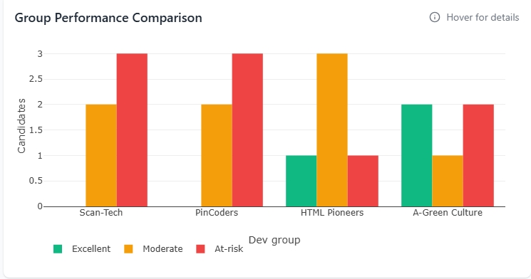

My Data Projects
Explore my completed and in-progress data analysis and machine learning projects. Each project showcases my skills in turning complex data into actionable insights.

MICT SP Insights Dashboard
JavaScript, Plotly.js, HTML/CSS
A comprehensive performance analysis dashboard for MICT Service Providers, featuring key performance indicators, detailed candidate data, and interactive filtering for deep insights.
COVID-19 Analysis
Python, Time Series, Statistical Modeling
Time-series analysis and statistical modeling of global COVID-19 data to track trends, predict future outbreaks, and evaluate the effectiveness of public health measures.
Interested in Collaborating?
While these projects are in development, I'm always open to new opportunities and collaborations. Let's discuss how we can work together on exciting data challenges!
Get In Touch